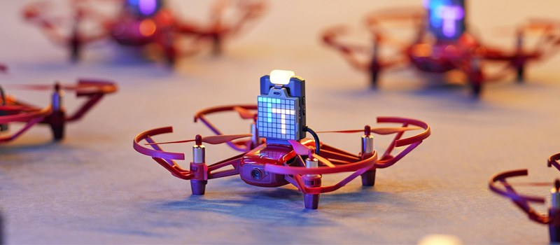
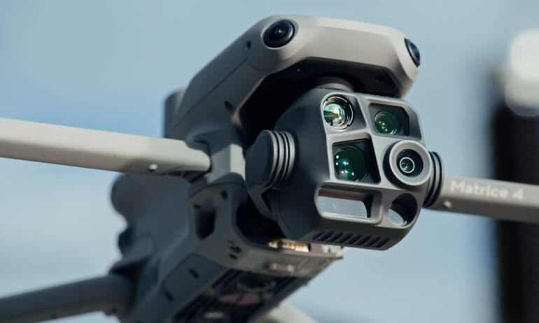
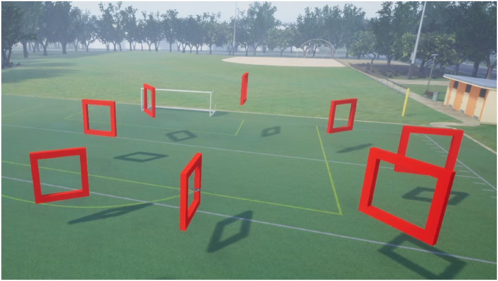
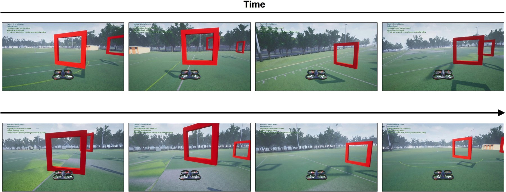
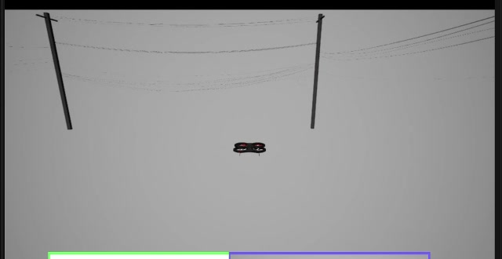
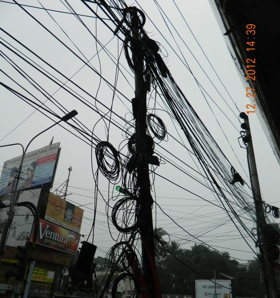
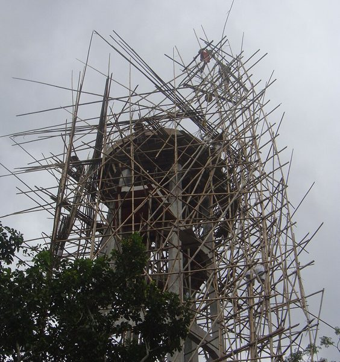
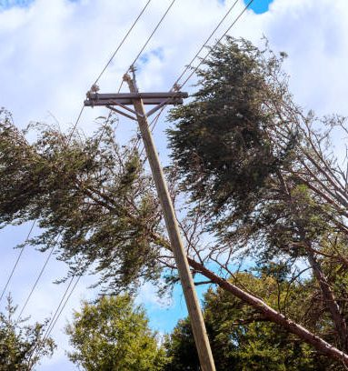

CSE499 · Capstone proposal
Thin-Structure-Aware Deviation Embedding for Camera-Only Drone Navigation
Helping a drone with one camera see wires, bamboo and foliage, for Bangladesh.
Presented bySabiha, Sabbir, Rahiq and Tarif
CSE499 facultyDr. Mohammad Rashedur Rahman [RRn]
UniversityNorth South University · Fall 2026
Builds onSVE, Wu, Fang, Lai, Liu. Expert Systems With Applications 333 (2027) 133887
A proposal. Nothing here is tested yet.
Our drawing for this talk.
SVE paper under CC BY 4.0. Our idea is built on top of it and has not been tested.
CSE499 · North South University · Fall 2026
1 · Project idea
A street full of wires
What happens when a drone flies into one?
CAM
CRASH
Illustrative clip, not footage from our own experiments.
1The drone flies straight toward the wires.
2It hits them and falls.
It never saw the wires in time.
Cables like these hang above most city roads.
CSE499 · North South University · Fall 2026
1 · Project idea
A wire is thinner than a pixel
How much of the picture does a thin wire fill?
256 × 256 picture zoomed on the wire
0.08 pxwire covers 8% of a pixel
64 × 64 picture zoomed on the wire
0.02 pxwire covers 2% of a pixel
Boost makes faint shades easier to see.
Camera mathswidth in pixels = thickness × focal ÷ distance
Focal = half the picture width, because our camera sees 90 degrees. That is 128 px at 256 and 32 px at 64.
Under one pixel. The wire almost disappears.
Pinhole camera, 90 degree view. This matches the wire widths we measured in our Colosseum simulator tests.
CSE499 · North South University · Fall 2026
1 · Project idea
Our idea: teach the drone to dodge
What do we want, and what are we allowed to use?
A drone that dodges thin wires, with one camera.
ObjectiveDodge thin wiresGo over, under or around them. Never touch.
ConstraintOne camera onlyNo LiDAR, no radar, no depth sensor.
MethodCopy an expertImitation learning: the drone learns what an expert would do.
Next: why a single camera matters, and the paper we build on.
CSE499 · North South University · Fall 2026
2 · Why it is cool
One camera costs $290
What does a drone cost with one camera, and with many sensors?

DJI RoboMaster TT
Price$290
One RGB camera. The drone the SVE authors flew.

DJI Matrice 4
Price$5,489
LiDAR and multiple sensors, as the SVE paper describes it.
RoboMaster TT
Matrice 4
About 19 times the price.
Drone names, prices and sensor description as stated in the SVE paper (Wu et al., ESWA 333, 2027, Introduction). Shop prices change. Photos: DJI.
CSE499 · North South University · Fall 2026
2 · Why it is cool
The task: fly through red gates
What was the SVE drone asked to do?


A gate is a red frame. The drone must fly through it.
Eight gates stand on a circle. Their places change at random.
SVE flies whole laps, one gate after another.
Gates are big and bright red.
Figures 1 and 4 from the SVE paper (Wu et al., ESWA 333, 2027), CC BY 4.0. Fig. 4 is an outside view of one lap.
CSE499 · North South University · Fall 2026
2 · Why it is cool
Can one camera be enough?
For racing gates, the SVE paper says yes.
The SVE authors flew a RoboMaster TT in the real world, using its camera only.
75%success in 20 real flights. A plain ViT got 40%.
That was for gates. Gates are big. Are wires?
Real-world result from the SVE paper (Wu et al., 2027, Section 5.3): 20 trials for SVE and for the ViT baseline. Photo: DJI.
CSE499 · North South University · Fall 2026
2 · Why it is cool
The real problem: a wire in our simulator
What does a wire look like to our drone?

A frame from our simulatorPoles and wires, set up by us. The drone must fly past them.
The wire is only a thin lineFrom far away it can be thinner than one pixel.
Both papers fly gates, not wires. This is the gap we work on.
Frame from our own simulator recording.
CSE499 · North South University · Fall 2026
3 · Plan: extend SVE
The paper we extend
Which paper do we build on?
Name: SVEStable Variational Encoder
From Xi'an Jiaotong UniversityPublished in ESWA, 2027
We extend this paper.
First page of Wu, Fang, Lai, Liu. Expert Systems With Applications 333 (2027) 133887.
CSE499 · North South University · Fall 2026
3 · Plan: extend SVE
But first, what is a VAE?
SVE has "encoder" in its name. Does it keep one?
"The SVE omits the encoder and directly applies variation to the original images."SVE paper, abstract
SVEthe paper we extend
←
CM-VAEidea comes from here (CMU and Microsoft)
So first, we look at the VAE paper.
Quote from the SVE paper abstract. VAE paper: Bonatti et al., arXiv:1909.06993.
CSE499 · North South University · Fall 2026
3 · Plan: extend SVE
Our road map
Three papers, one line of work.
CM-VAEFirst: the VAE paper
→
SVEThen: the paper we extend
→
OursLast: thin wires
Roadmap of this talk.
CSE499 · North South University · Fall 2026
3 · Plan: extend SVE
Both papers fly gates
What do the two papers test?
CM-VAE
Bonatti et al.✓ Fly through gates
✗ Thin wires
SVE
Wu et al.✓ Fly through gates
✗ Thin wires
Neither paper tests thin wires. This is our gap.
Tasks as stated in the CM-VAE paper and the SVE paper.
CSE499 · North South University · Fall 2026
4 · The VAE paper
The VAE paper
How can a drone learn from a tiny summary of the image?
Learning Visuomotor Policies for Aerial Navigation Using Cross-Modal Representations
Bonatti, Madaan, Vineet, Scherer, Kapoor
Carnegie Mellon University and Microsoft
Carnegie Mellon University and Microsoft
arXiv:1909.06993 (2019, revised 2020)
Bonatti et al., arXiv:1909.06993v2.
CSE499 · North South University · Fall 2026
4 · The VAE paper
Why this paper?
What problem did Microsoft and CMU solve?
Real world
fly, record, label✗ Slow and costly
✗ A crash is dangerous
Simulator
fast and cheap data✓ Data is easy to make
? May fail in real life
Goal: train only in the simulator. Then fly in the real world.
Source: CM-VAE paper, abstract and introduction.
CSE499 · North South University · Fall 2026
4 · The VAE paper
The big idea: two steps
How do they teach the drone?
Step 1Learn a small code
image → 10 numbers (z)
image → 10 numbers (z)
→
Step 2Learn to fly
10 numbers → 4 velocities
10 numbers → 4 velocities
Why two steps?The flying part only has a small space to search. So it learns from fewer examples.
Source: CM-VAE paper, Section III (Approach).
CSE499 · North South University · Fall 2026
4 · The VAE paper
Two kinds of data, one code
What does the encoder learn from?
Image
from the camera✓ Needs no label
✓ 64 × 64 colour pixels
Gate pose
from the simulator✓ 4 numbers: r, θ, ψ, φ
✓ A label: the simulator knows it
Both are tied to the same 10-number code z. This is called cross-modal.
Source: CM-VAE paper, Section III-A and III-B. "Modal" means kind of data.
CSE499 · North South University · Fall 2026
5 · Architecture and data
The four gate numbers
What do r, θ, ψ, φ mean?
r distanceHow far the gate is. 0.1 to 20 m.
θ left or rightSideways angle to the gate. About ±38°.
ψ up or downAngle from straight up. 90° means same height.
φ turn of the gateHow much the gate is turned. −180° to 0°.
Names and ranges from the repo (pose_sampler.py, dataset_utils.py). The paper calls the third number polar φ and the fourth yaw ψ; the code uses the opposite letters. Sketch, not to scale.
CSE499 · North South University · Fall 2026
5 · Architecture and data
Data for the VAE
How do they get thousands of labelled images?
No flying. The code moves the drone to a random pose.x, y: ±30 m · height: 2 to 3 m · yaw: any · pitch, roll: ±18°
A red gate is put in front of the camera.Distance r: 0.1 to 20 m, always inside the camera view.
Save the picture and the 4 gate numbers.One picture + 4 numbers = one training example.
Paper: 300K images (64 × 64). The repo demo uses 1K.
Sources: pose_sampler.py (ranges, teleport), CM-VAE paper Section IV-A (300K images).
CSE499 · North South University · Fall 2026
5 · In the code
Code: random pose and gate
Where is this in the repo?
datagen/img_generator/pose_sampler.py
22UAV_X_RANGE = [-30, 30] # world x quad
23UAV_Y_RANGE = [-30, 30] # world y quad
24UAV_Z_RANGE = [-2, -3] # world z quad
⋮
26UAV_YAW_RANGE = [-np.pi, np.pi] #[-eps, eps] [-np.pi/4, np.pi/4]
⋮
28UAV_PITCH_RANGE = [-eps, eps] #[-np.pi/4, np.pi/4]
29UAV_ROLL_RANGE = [-eps, eps] #[-np.pi/4, np.pi/4]
⋮
31R_RANGE = [0.1, 20] # in meters
⋮
62 p_o_b, phi_base = racing_utils.geom_utils.randomQuadPose(UAV_X_RANGE, UAV_Y_R…
63 self.client.simSetVehiclePose(p_o_b, True)
⋮
65 p_o_g, r, theta, psi, phi_rel = racing_utils.geom_utils.randomGatePose(p_o_b,…
⋮
68 self.client.simSetObjectPose(self.tgt_name, p_o_g, True)
⋮
71 image_response = self.client.simGetImages([airsim.ImageRequest('0', airsim.Im…
⋮
73 self.writeImgToFile(image_response)
74 self.writePosToFile(r, theta, psi, phi_rel)
Press →Each press lights up one part of the code and explains it.
Where the drone isUAV_X_RANGE, UAV_Y_RANGE: ±30 m sideways. UAV_Z_RANGE: height 2 to 3 m (the simulator counts up as negative).
How it is turnedYaw: any angle, −π to π. Pitch and roll: ±eps = ±18°.
How far the gate isR_RANGE: the gate is 0.1 to 20 metres away.
Move the dronerandomQuadPose draws a random pose. simSetVehiclePose puts the drone there. No flying.
Draw the gaterandomGatePose returns the 4 label numbers: r, theta, psi, phi_rel.
Place the gatesimSetObjectPose puts the red gate at that place.
Take the picturesimGetImages asks the simulator for the camera image.
SaveThe picture goes to a PNG file. The 4 numbers go to the CSV file.
Repo file: datagen/img_generator/pose_sampler.py (lines shown with original numbers).
CSE499 · North South University · Fall 2026
5 · Architecture and data
Put numbers on one scale
Why does the code turn every number into −1 … 1?
Pixels: 0…255 become −1…1.0 → −1, 255 → +1. The code reads images in BGR order.
Each gate number has its own range.r: 0.1…20 m · θ: ±38.25° · ψ: 51.75°…128.25° · φ: −180°…0°
Example: r = 5 m becomes about −0.51.(5 − 0.1) ÷ 19.9 × 2 − 1
Small numbers of equal size make learning easier.
Source: dataset_utils.py (create_dataset_csv, normalize_gate). Example computed by us.
CSE499 · North South University · Fall 2026
5 · In the code
Code: loading and scaling
Where is this in the repo?
racing_utils/dataset_utils.py
64def normalize_gate(pose):
⋮
66 r_range = [0.1, 20]
⋮
69 theta_range = [-alpha, alpha]
70 psi_range = [np.pi / 2 - alpha, np.pi / 2 + alpha]
71 eps = 0.0
72 phi_rel_range = [-np.pi + eps, 0 - eps]
⋮
75 pose[0] = 2.0 * (pose[0] - r_range[0]) / (r_range[1] - r_range[0]) - 1.0
⋮
161 im = cv2.imread(file, cv2.IMREAD_COLOR)
162 im = cv2.resize(im, (res, res))
163 im = im / 255.0 * 2.0 - 1.0
⋮
174 raw_table = np.loadtxt(data_dir + '/gate_training_data.csv', delimiter=' ')
⋮
190 raw_table = normalize_gate(raw_table)
⋮
192 img_train, img_test, dist_train, dist_test = train_test_split(images_np, raw_tabl…
Press →Each press lights up one part of the code and explains it.
ImagesRead the PNG (OpenCV gives BGR), resize to 64×64, scale 0…255 to −1…1.
LabelsRead the CSV file: one row of r, theta, psi, phi_rel per image.
Gate numbersnormalize_gate: (value − min) ÷ (max − min) × 2 − 1. Each number uses its own range.
Train and testtest_size=0.1: 10% is kept for testing. (The paper says 20%.)
Repo file: racing_utils/dataset_utils.py.
CSE499 · North South University · Fall 2026
5 · Architecture and data
The encoder squeezes the image
How does a picture become 20 numbers?
Image64 × 64 × 3
→
Conv + pool16 × 16 × 32
→
3 residual blocks2 × 2 × 128
→
Dense 64 → 32after flatten: 512
→
20 numbers10 means + 10 spreads
Small on purpose: about 300K parameters.It is DroNet, an 8-layer ResNet, so it runs fast on a drone.
Sources: CM-VAE paper (DroNet, 300K parameters); layer settings from dronet.py. Feature-map sizes computed by us from the strides.
CSE499 · North South University · Fall 2026
5 · In the code
Code: the encoder
Where is this in the repo?
racing_models/cmvae.py
15self.q_img = dronet.Dronet(num_outputs=n_z*2, include_top=True)
racing_models/dronet.py
81self.conv0 = Conv2D(filters=32, kernel_size=5, strides=2, padding='same', activation=…
82self.conv1 = Conv2D(filters=32, kernel_size=3, strides=2, padding='same', activation=…
83self.conv2 = Conv2D(filters=32, kernel_size=3, strides=1, padding='same', activation=…
84self.conv3 = Conv2D(filters=32, kernel_size=1, strides=2, padding='same', activation=…
85self.conv4 = Conv2D(filters=64, kernel_size=3, strides=2, padding='same', activation=…
86self.conv5 = Conv2D(filters=64, kernel_size=3, strides=1, padding='same', activation=…
87self.conv6 = Conv2D(filters=64, kernel_size=1, strides=2, padding='same', activation=…
88self.conv7 = Conv2D(filters=128, kernel_size=3, strides=2, padding='same', activation…
89self.conv8 = Conv2D(filters=128, kernel_size=3, strides=1, padding='same', activation…
90self.conv9 = Conv2D(filters=128, kernel_size=1, strides=2, padding='same', activation…
⋮
92self.dense0 = tf.keras.layers.Dense(units=64, activation='relu')
93self.dense1 = tf.keras.layers.Dense(units=32, activation='relu')
94self.dense2 = tf.keras.layers.Dense(units=num_outputs, activation='linear')
Press →Each press lights up one part of the code and explains it.
First layerconv0: a 5×5 filter, stride 2, 32 filters. A max-pool then halves the size again.
Residual block 132 filters. conv1 and conv2 are the main path, conv3 is the shortcut.
Residual block 2The same pattern with 64 filters.
Residual block 3The same pattern with 128 filters.
Dense layers64 → 32 → num_outputs. The model asks for n_z*2 = 20 outputs: 10 means and 10 spreads.
Repo files: racing_models/cmvae.py and racing_models/dronet.py (long lines cut with an ellipsis).
CSE499 · North South University · Fall 2026
5 · Architecture and data
What is z?
What are the 10 numbers?
The encoder gives 20 numbers: 10 means (μ) and 10 spreads.mean: the best guess for each z number · spread: how unsure that guess is
z = μ + ε × e0.5 × spread
ε is random noise (a normal number), drawn fresh for every image.Why noise?Nearby z values must give nearly the same picture. Noise forces z to be smooth.
The code still adds noise when the drone flies.
Sources: CM-VAE paper (sampling from N(mu, sigma^2)); cmvae.py (encode). The noise at flight time is our reading of the code.
CSE499 · North South University · Fall 2026
5 · In the code
Code: making z
Where is this in the repo?
racing_models/cmvae.py
19self.mean_params = Lambda(lambda x: x[:, : n_z])
20self.stddev_params = Lambda(lambda x: x[:, n_z:])
⋮
27x = self.q_img(x)
28means = self.mean_params(x)
29stddev = tf.math.exp(0.5 * self.stddev_params(x))
30eps = random_normal(tf.shape(stddev))
31z = means + eps * stddev
Press →Each press lights up one part of the code and explains it.
Run the encoderThe image becomes 20 numbers.
Split in twoThe first n_z = 10 numbers are the means. The rest are the spread numbers.
Spreadexp(0.5 × spread) makes a positive size for the noise. The code calls it stddev.
Noiseeps: random numbers from a normal curve. New for every image.
The code zz = means + eps × stddev. This is the 10-number code.
Repo file: racing_models/cmvae.py (class Cmvae).
CSE499 · North South University · Fall 2026
5 · Architecture and data
Decoder 1: rebuild the image
Why rebuild a picture we already have?
z10 numbers
→
Dense 10241 × 1 × 1024
→
6 transposed convs128, 64, 64, 32, 16, 3
→
Image64 × 64 × 3
It forces z to keep the picture.If z can rebuild the image, it holds the gate and the background.
The result is blurry, but gate and ground are kept.Paper, Fig. 5.
Sources: decoders.py (layers); CM-VAE paper Fig. 5 (blurry reconstructions).
CSE499 · North South University · Fall 2026
5 · In the code
Code: the image decoder
Where is this in the repo?
racing_models/decoders.py
15dense = Dense(units=1024, name='p_img_dense')
16reshape = Reshape((1, 1, 1024))
⋮
19deconv1 = Conv2DTranspose(filters=128, kernel_size=4, strides=1, padding='valid', act…
20deconv2 = Conv2DTranspose(filters=64, kernel_size=5, strides=1, padding='valid', acti…
21deconv3 = Conv2DTranspose(filters=64, kernel_size=6, strides=1, padding='valid', acti…
22deconv4 = Conv2DTranspose(filters=32, kernel_size=5, strides=2, padding='valid', acti…
23deconv5 = Conv2DTranspose(filters=16, kernel_size=5, strides=1, padding='valid', acti…
⋮
25deconv7 = Conv2DTranspose(filters=3, kernel_size=6, strides=1, padding='valid', activ…
Press →Each press lights up one part of the code and explains it.
Dense and reshapez (10 numbers) becomes 1024 numbers, shaped as a 1×1 map with 1024 channels.
Growing the pictureFive transposed convolutions with 128, 64, 64, 32 and 16 filters make the map bigger step by step.
Last layer3 colour channels with tanh: values between −1 and 1, the same scale as the input.
Repo file: racing_models/decoders.py (class ImgDecoder).
CSE499 · North South University · Fall 2026
5 · Architecture and data
Decoder 2: read the gate
Which z numbers hold the gate?
z[0]
z[1]
z[2]
z[3]
z[4]
z[5]
z[6]
z[7]
z[8]
z[9]
z[0] → rhow big the gate looks (distance)
z[1] → θgate left or right
z[2] → ψgate up or down
z[3] → φhow the gate is turned
z[4] to z[9]: free. They hold the background.
Each of the four has its own small network (dense 64 → 32 → 1).The paper calls this the constrained version.
Sources: CM-VAE paper Section III-B (constraints, Fig. 4); cmvae.py (CmvaeDirect), transformer.py.
CSE499 · North South University · Fall 2026
5 · In the code
Code: the gate decoder
Where is this in the repo?
racing_models/cmvae.py
78self.p_R = transformer.NonLinearTransformer()
79self.p_Theta = transformer.NonLinearTransformer()
80self.p_Psi = transformer.NonLinearTransformer()
81self.p_Phi = transformer.NonLinearTransformer()
⋮
85self.R_params = Lambda(lambda x: x[:, 0])
86self.Theta_params = Lambda(lambda x: x[:, 1])
87self.Psi_params = Lambda(lambda x: x[:, 2])
88self.Phi_params = Lambda(lambda x: x[:, 3])
⋮
102 gate_recon = tf.keras.layers.concatenate([self.p_R(r_params), self.p_Theta(theta_…
racing_models/transformer.py
15dense0 = tf.keras.layers.Dense(units=64, activation='relu')
16dense1 = tf.keras.layers.Dense(units=32, activation='relu')
17dense2 = tf.keras.layers.Dense(units=1, activation='linear')
Press →Each press lights up one part of the code and explains it.
Four small networksOne for each gate number: p_R, p_Theta, p_Psi, p_Phi.
Each reads one z numberx[:, 0] is z[0] for r, x[:, 1] for theta, x[:, 2] for psi, x[:, 3] for phi.
Join the answersThe four outputs are put together as the 4 gate numbers. The image decoder still reads all 10 numbers.
Inside each networkDense 64, dense 32, dense 1: one number out.
Repo files: racing_models/cmvae.py (class CmvaeDirect, the default used for training) and racing_models/transformer.py.
CSE499 · North South University · Fall 2026
5 · Architecture and data
Three scores for training
What does the VAE try to make small?
Image errorRebuilt image vs real image. Mean squared error. Weight 1.
Gate errorPredicted gate numbers vs true ones. Mean squared error. Weight 1.
KL scoreKeeps z near a simple bell curve, so it stays smooth. Weight 8 (set in the code).
Total = 1 × image + 1 × gate + 8 × KL
Settings: Adam, learning rate 0.0001, batch 32, 50 epochs.z = 10 numbers, images 64 × 64.
Sources: CM-VAE paper (three losses); train_cmvae.py (weights and settings). The weight 8 is in the code, not in the paper. Mean squared error = average of (difference)^2.
CSE499 · North South University · Fall 2026
5 · In the code
Code: the loss
Where is this in the repo?
cmvae/train_cmvae.py
15batch_size = 32
16epochs = 50
17n_z = 10
⋮
21learning_rate = 1e-4
⋮
46 beta = 8.0
⋮
59 w_img = 1.0
⋮
64 w_gate = 1.0
⋮
73 img_loss = tf.losses.mean_squared_error(img_gt, img_recon)
⋮
75 gate_loss = tf.losses.mean_squared_error(gate_gt, gate_recon)
76 kl_loss = -0.5 * tf.reduce_mean(tf.reduce_sum((1 + stddev - tf.math.pow(means…
⋮
110 total_loss = w_img*img_loss + w_gate*gate_loss + beta*kl_loss
Press →Each press lights up one part of the code and explains it.
Image lossMean squared error between the real image and the rebuilt one.
Gate lossMean squared error between the true and predicted gate numbers (both on the −1…1 scale).
KL lossPushes the means and spreads toward a simple bell curve. It gets the large weight.
Weights and totalbeta = 8, w_img = 1, w_gate = 1. total_loss adds the three scores.
SettingsBatch 32, 50 epochs, z has 10 numbers, learning rate 0.0001.
Repo file: cmvae/train_cmvae.py. Only the first branch of each if/else is shown.
CSE499 · North South University · Fall 2026
5 · Architecture and data
What the VAE learned
Does the code really hold the gate?
| Gate number (paper names) | Average error |
|---|---|
| Radius r | 0.39 m |
| Azimuth θ | 2.6° |
| Polar φ | 2.3° |
| Yaw ψ | 10° |
The first 4 numbers of z behave as designed.They change the gate size, left-right offset, up-down offset and turn (paper Fig. 4).
The code is smooth.Blend two z codes and the picture and gate numbers change smoothly (paper Fig. 6).
Source: CM-VAE paper Table I (constrained CM-VAE), Fig. 4 and Fig. 6. 300K images, 80% train and 20% test. Table uses the paper's letter names.
CSE499 · North South University · Fall 2026
5 · Architecture and data
Data for the expert
How does the drone learn to fly?
It needs examples: image → correct velocity.This is called imitation learning (behavior cloning).
Track: a circle of 8 gates, radius 8 m.Gates are moved at random every lap (0 to 3 m in the paper).
The expert is a planner that flies a smooth path to the next gate.Paper: minimum-jerk planner. Code: the simulator's spline planner, max 5 m/s.
Saved: image + velocity. Paper: 17.5K images, 80% for training.
Sources: CM-VAE paper Section III-C and IV-B; soccer_datagen.py.
CSE499 · North South University · Fall 2026
5 · In the code
Code: the expert flight
Where is this in the repo?
datagen/action_generator/soccer_datagen.py
21num_gates_track = 8
22race_course_radius = 8
23gate_displacement_noise = 1.0
⋮
27vel_max = 5.0
28acc_max = 3.0
⋮
204 self.last_future = self.client.moveOnSplineAsync([self.curr_track_gate_po…
205 vel_max=self.vel_max, acc_max=self.acc_max,
206 add_curr_odom_position_constraint=True,
207 add_curr_odom_velocity_constraint=True,
208 viz_traj=viz_traj,
209 vehicle_name=self.drone_name)
datagen/action_generator/data_processor.py
11INTERPOLABLE_VEL_COLUMNS = ['vx', 'vy', 'vz', 'vyaw']
⋮
62 interpolated_vel_record[col] = interpolate(record1[col], record2[col], t)
Press →Each press lights up one part of the code and explains it.
The track8 gates, radius 8 m. gate_displacement_noise moves the gates at random (script default 1 m; the paper varies it 0 to 3 m).
Speed limitsThe expert flies at most 5 m/s with at most 3 m/s² acceleration.
The expert flightmoveOnSplineAsync flies a smooth path to the next gate position.
What is recordedVelocity columns: vx, vy, vz and vyaw.
Match to the imageThe image time lies between two log lines, so the velocity is blended (interpolated) at that time.
Repo files: datagen/action_generator/soccer_datagen.py and data_processor.py.
CSE499 · North South University · Fall 2026
5 · Architecture and data
The four velocity numbers
What does the policy have to answer?
vxforward
−1 … 7 m/s
−1 … 7 m/s
vysideways
−3 … 3 m/s
−3 … 3 m/s
vzup / down
−3 … 3 m/s
−3 … 3 m/s
yaw rateturning
−1 … 1
−1 … 1
They are in the drone's own frame.Forward means forward for the drone. The code turns them into world directions later.
They are also scaled to −1 … 1.The same trick as for the gate numbers.
Example: vx = 3 m/s becomes 0.
Source: dataset_utils.py (normalize_v ranges), vel_regressor.py (body to world). Example computed by us: (3 + 1) / 8 * 2 - 1 = 0.
CSE499 · North South University · Fall 2026
5 · In the code
Code: scaling the velocities
Where is this in the repo?
racing_utils/dataset_utils.py
22 v_x_range = [-1, 7]
23 v_y_range = [-3, 3]
24 v_z_range = [-3, 3]
25 v_yaw_range = [-1, 1]
⋮
28 v[0] = 2.0 * (v[0] - v_x_range[0]) / (v_x_range[1] - v_x_range[0]) - 1.0
⋮
42def de_normalize_v(v):
⋮
50 v[0] = (v[0] + 1.0) / 2.0 * (v_x_range[1] - v_x_range[0]) + v_x_range[0]
imitation_learning/vel_regressor.py
50predictions = racing_utils.dataset_utils.de_normalize_v(predictions)
Press →Each press lights up one part of the code and explains it.
Rangesvx from −1 to 7, vy and vz from −3 to 3, yaw rate from −1 to 1.
To −1 … 1normalize_v: (value − min) ÷ (max − min) × 2 − 1. Used on the expert data before training.
Back to m/sde_normalize_v is the opposite. It is used on the policy answer when the drone flies.
Repo files: racing_utils/dataset_utils.py and imitation_learning/vel_regressor.py.
CSE499 · North South University · Fall 2026
5 · Architecture and data
Step 2: the policy
What does the flying part look like?
z10 numbers
→
Dense 256ReLU
→
Dense 16ReLU
→
4 outputsvx, vy, vz, yaw rate
The encoder is frozen. Only the policy learns.CM-VAE weights are loaded and not changed.
Loss: mean squared error to the expert's velocity.Adam, learning rate 0.01, batch 32, 400 epochs.
The flight script uses the policy saved at epoch 150.
Sources: bc_latent.py, train_bc.py, bc_navigation.py. The paper says the policy has 3 dense layers.
CSE499 · North South University · Fall 2026
5 · In the code
Code: the policy
Where is this in the repo?
racing_models/bc_latent.py
15dense0 = tf.keras.layers.Dense(units=256, activation='relu')
⋮
18dense3 = tf.keras.layers.Dense(units=16, activation='relu')
19dense4 = tf.keras.layers.Dense(units=4, activation='linear')
⋮
22 # dense1,
23 # dense2,
imitation_learning/train_bc.py
34batch_size = 32
35epochs = 400
⋮
38learning_rate = 1e-2 # 1e-2 for latent, 1e-3 for full
⋮
61 z, _, _ = cmvae_model.encode(images)
62 predictions = bc_model(z)
⋮
109 cmvae_model.load_weights(cmvae_weights_path)
110 cmvae_model.trainable = False
Press →Each press lights up one part of the code and explains it.
First layer256 neurons with ReLU. The input is z (10 numbers).
Second layer16 neurons with ReLU.
Output layer4 neurons, linear: vx, vy, vz and yaw rate.
Two layers are offLayers with 128 and 64 neurons exist but are commented out. The real policy is 256 → 16 → 4.
SettingsBatch 32, 400 epochs, learning rate 0.01.
The flowThe image is encoded to z. Then the policy reads z.
Frozen encoderThe trained CM-VAE weights are loaded, then trainable = False. Only the policy learns.
Repo files: racing_models/bc_latent.py and imitation_learning/train_bc.py.
CSE499 · North South University · Fall 2026
5 · Architecture and data
At flight time
What happens every time the drone looks?
Camera imagefrom the drone
→
64 × 64, −1…1resize and scale
→
Encoder → zthen the policy
→
4 velocitiesscale back to m/s
→
World frameturn body → world
→
Move!0.1 s command, then repeat
Sources: bc_navigation.py (process_image, move_drone), vel_regressor.py (predict_velocities).
CSE499 · North South University · Fall 2026
5 · In the code
Code: the flight loop
Where is this in the repo?
imitation_learning/bc_navigation.py
35img_resized = cv2.resize(img_bgr, (img_res, img_res)).astype(np.float32)
⋮
48yaw_mode = airsimdroneracingvae.YawMode(is_rate=True, yaw_or_rate=vel_cmd[3]*180.0/np…
49client.moveByVelocityAsync(vel_cmd[0], vel_cmd[1], vel_cmd[2], duration=0.1, yaw_mode…
imitation_learning/vel_regressor.py
40img = (img / 255.0) * 2 - 1.0
⋮
44 z, _, _ = self.cmvae_model.encode(img)
45 predictions = self.bc_model(z)
⋮
50predictions = racing_utils.dataset_utils.de_normalize_v(predictions)
⋮
52v_xyz_world = racing_utils.geom_utils.convert_t_body_2_world(airsimdroneracingvae.Vec…
Press →Each press lights up one part of the code and explains it.
ResizeThe camera image is resized to 64×64.
ScalePixels 0…255 become −1…1, as in training.
EncodeThe CM-VAE encoder gives z.
PolicyThe policy turns z into 4 numbers.
Back to m/sde_normalize_v gives real velocities.
To the world frameconvert_t_body_2_world turns forward, sideways and up into world directions.
SendmoveByVelocityAsync sends the command for 0.1 s. Yaw rate is turned from radians to degrees per second.
Repo files: imitation_learning/bc_navigation.py and imitation_learning/vel_regressor.py.
CSE499 · North South University · Fall 2026
5 · Architecture and data
How well did it work?
What did the paper find in the simulator?
Test: 8 gates on a circle, gates moved at random.Success = all gates in 3 laps in a row. 10 trials per point.
Five policies compared.BCcon (constrained CM-VAE), BCunc, BCimg (plain VAE), BCreg (gate regression), BCfull (end to end).
Gates moved up to 3 m: BCcon succeeds about 40% of the time.About 5 times better than end-to-end learning.
All of this was for gates. Gates are big.
Source: CM-VAE paper Section IV-B, Fig. 7.
CSE499 · North South University · Fall 2026
5 · Architecture and data
Number cheat-sheet
What are the numbers to remember?
Step 1: the VAE
Image in: 64 × 64 × 3, scaled −1…1
Encoder out: 20 = 10 means + 10 spreads
z: 10 numbers
Gate label: r, θ, ψ, φ
Loss: 1 × image + 1 × gate + 8 × KL
Train: Adam 0.0001, batch 32, 50 epochs
Step 2: the policy
In: z (10 numbers), encoder frozen
Layers: 256 → 16 → 4
Out: vx, vy, vz, yaw rate
Expert data: 8 gates, radius 8 m, 17.5K images (paper)
Train: Adam 0.01, batch 32, 400 epochs
Fly: image → z → velocity
Sources: CM-VAE paper and repo, as shown on the previous slides.
CSE499 · North South University · Fall 2026
7 · What SVE added
SVE is not a small step
How is SVE different from the VAE idea?
CM-VAE
the paper before✓ Encoder: image → 10 numbers
✓ A short code z
✓ KL loss
✓ Noise size comes from each image
✓ Two training stages
SVE
the paper we extend✗ No encoder
✗ No short code
✗ No KL loss
✓ Noise size comes from a fixed table
✓ One training stage
Encoder = a network that squeezes a picture into a short list of numbers.
SVE removes the encoder and adds a fixed, learned noise table.
SVE paper (Wu et al., ESWA 333, 2027), abstract and Section 3.2. CM-VAE column from the repo.
CSE499 · North South University · Fall 2026
7 · What SVE added
The problem SVE saw
What goes wrong with the VAE noise?
In a VAE, the noise size is computed from each image.Noise (variation) is added on purpose, so the model does not memorise the training pictures.
A tiny change in the image can change the noise a lot.The paper calls this unstable variation.
So the code z jumps, and the velocity commands jump too.For flying, a jumpy answer is dangerous.
In SVE's tests the plain VAE had 0% success in every experiment.
SVE paper (Wu et al., ESWA 333, 2027), Sections 3.3 and 4.2.
CSE499 · North South University · Fall 2026
7 · What SVE added
The new idea: Stable Variation
What does SVE do to the image?
new image = image + σ ⊙ ξ
Simple meaning: add a little noise to every pixel.σ (sigma): a noise-size tableSame size as the image. One number per pixel and colour. It does not depend on the picture.
ξ (xi): random noiseA normal random number (centre 0, spread 1). New every time, also at test time.
⊙ means multiply pixel by pixel. So each pixel gets its own noise size.
Stable: σ does not change when the picture changes.
SVE paper (Wu et al., ESWA 333, 2027), Eq. 9 and Section 3.2. The paper writes sigma with the label DevEmb (Deviation Embedding).
CSE499 · North South University · Fall 2026
7 · What SVE added
Where does σ come from?
Who sets the noise size?
Startrandom numbers
→
Trainlearned with the network
→
Testtable is frozen
Learned (trainable) means the network changes these numbers a little after every mistake, the same way it changes its other weights. This is called backpropagation.
Noise is used in training and in testing.The paper tested this: using it in both works better than in training only. So it is more than data augmentation.
The table is tiny. It costs almost nothing, and the encoder it replaces is big.
SVE paper (Wu et al., ESWA 333, 2027), Section 3.2 and Fig. 7a.
CSE499 · North South University · Fall 2026
7 · What SVE added
SVE in the paper’s own picture
Where is the noise table in the paper’s figure?

1. Input pictureThe camera picture is used as the mean (μ = image).
2. “Variational Encoding”There is no encoder network. This box only adds noise to the picture.
3. Deviation Embedding (σ²)The fixed learned noise table. It sets the noise size.
4. Decoder (ViT)Reads the noisy picture. This is the only network.
5. Four velocities vSent to the drone controller. Then a new camera picture arrives. The loop repeats.
Figure 2 of the SVE paper (Wu et al., ESWA 333 (2027) 133887). Gold boxes added by us.
CSE499 · North South University · Fall 2026
7 · What SVE added
The whole SVE flow
What happens from picture to command?
Camera imageRGB colour
→
+ σ ⊙ ξStable Variation
→
ViTVision Transformer
→
4 numbersvx, vy, vz, yaw rate
Decoder-onlyThe ViT reads the noisy image directly. There is no squeezing step before it.
One stageOne network, one loss. No frozen part, no second stage.
Keeping the whole image keeps more detail.
SVE paper (Wu et al., ESWA 333, 2027), Fig. 2 and Eq. 3.
CSE499 · North South University · Fall 2026
7 · What SVE added
The ViT in easy words
What is inside the Vision Transformer?
| Setting | What it means |
|---|---|
| Patch size 4 | The image is cut into small 4 × 4 pixel squares. |
| Embedding 1024 | Each square is described by 1024 numbers. |
| 6 layers | The squares are processed in 6 rounds. |
| 8 heads | In each round, 8 different views look at which squares matter to each other (attention). |
| MLP 2048 | A small network inside each round that mixes the numbers. |
SVE paper (Wu et al., ESWA 333, 2027), Section 4.1. The input image size is not stated in the paper (the real camera images are 960 × 720).
CSE499 · North South University · Fall 2026
7 · What SVE added
How SVE is trained
What data and settings?
| Setting | What it means |
|---|---|
| 2 million samples | Each sample: a simulator image + the drone's velocity at that moment. |
| Loss: MSE | Mean squared error: the average of (answer − expert velocity)². Small is good. |
| Adam | A common method that decides how to change the numbers after each mistake. |
| Learning rate 0.0001 | The size of each change. Small steps, safer learning. |
| Batch 64, 200 epochs | 64 samples per update. One epoch = one pass over all the data. |
SVE paper (Wu et al., ESWA 333, 2027), Section 4.1. The paper does not say how the simulation expert was built.
CSE499 · North South University · Fall 2026
7 · What SVE added
Smaller, and not slower
Does removing the encoder help?
| Method | Parameters | Time per image | Images per second |
|---|---|---|---|
| SVE | 39.69 M | 78.8 ms | 12.7 |
| ViT only | 38.12 M | 75.1 ms | 13.3 |
| VAE | 67.14 M | 122.4 ms | 8.2 |
Parameters = the numbers the network learns. M = million. More parameters usually means a bigger, slower network.
SVE is about the same size as a plain ViT, and much smaller than the VAE.
SVE paper (Wu et al., ESWA 333, 2027), Table 1.
CSE499 · North South University · Fall 2026
7 · What SVE added
What the paper reports
How well does SVE work?
Test: 8 gates on a circle, each gate moved at random by up to 0, 1, 2 or 3 m.Success = at least 4 laps, which is 32 gates.
Compared with: CM-VAE (two kinds), STC, ViT, VAE, VAE with Stable Variation.Plain VAE: 0% everywhere. With Stable Variation it gets much better, but SVE is still best.
Gains are biggest when the gates move a lot.Stable Variation also helped three different decoders (FC, CNN, ViT).
Real drone, 20 flights: SVE 75%, ViT 40%.
SVE paper (Wu et al., ESWA 333, 2027), Sections 4.2, 4.3, 5.3.
CSE499 · North South University · Fall 2026
7 · What SVE added
What SVE keeps from before
What is the same in the VAE line of work?
Same
in CM-VAE and SVE✓ Task: fly through gates
✓ Learn from an expert (imitation)
✓ Only a camera
Not tested
by either paper✗ Thin wires
✗ Objects that are less than 1 pixel wide
That is where our work begins.
SVE paper (Wu et al., ESWA 333, 2027); CM-VAE paper.
CSE499 · North South University · Fall 2026
8 · Limits on thin wires
How wide is a wire in the image?
Can the camera even see a thin wire?
width in pixels = thickness × (W ÷ 2) ÷ distance
Thickness and distance in metres. W = image width in pixels.W ÷ 2 = 128 at 256 pxFor a 90° view, W ÷ 2 is how many pixels one metre fills at 1 m away.
W ÷ 2 = 32 at 64 pxSo a 64 px image shows a wire 4 times thinner than a 256 px image.
Smaller picture, thinner wire.
Our own calculation: pinhole camera, 90° view, no blur. This is our measurement, not from SVE.
CSE499 · North South University · Fall 2026
8 · Limits on thin wires
A 6 mm wire at 10 m: under 0.1 pixel
What does that give for real distances?
| Image size | 2 m away | 5 m away | 10 m away |
|---|---|---|---|
| 960 px (raw camera) | 1.44 px | 0.58 px | 0.29 px |
| 256 px | 0.38 px | 0.15 px | 0.077 px |
| 64 px | 0.096 px | 0.038 px | 0.019 px |
Pixel = one dot of the picture. Under 1 pixel, the wire does not fill even one dot. It only slightly tints the dots it crosses.
At 10 m, a 6 mm wire is under 0.1 pixel at 256 px and at 64 px.
Our own calculation: pinhole camera, 90° view, no blur. Wire thickness 6 mm. Real cameras also blur, which makes it worse.
CSE499 · North South University · Fall 2026
8 · Limits on thin wires
SVE noise may hide thin wires
Why might SVE struggle with wires?
HYPOTHESIS · not tested yet
SVE adds noise to every pixel.The noise size σ was learned on gate flights.
A wire changes a pixel only a tiny bit.If the noise is bigger than that change, the wire may be lost in it.
Gates are big, so noise does not hide them.This may be why SVE works well on gates. We must test it on wires.
Our hypothesis, not a result. SVE does not test wires.
CSE499 · North South University · Fall 2026
9 · Our first experiment
Experiment 1: wire width in the simulator
What is the very first thing we will test?
PLANNED · no results yet
QuestionWhen a wire gets thinner (1, 2, 3, 5 pixels), how many flights still get through?
Our guessSVE puts the same noise on every pixel. A 1 pixel wire may vanish in it. This is a hypothesis.
The testDraw the wires in AirSim. Train six methods on the same data and the same ViT. Fly each one many times.
Same data. Same ViT. Only the noise changes.
Plan from our proposal deck (slides 4 and 6). Nothing has been trained yet.
CSE499 · North South University · Fall 2026
9 · Our first experiment
What the noise may do to a wire
How can noise hide a thin wire?
PLANNED · no results yet
Clean picture
With SVE-style noise
3 px wirethick
1 px wire
0.3 px wire
0.08 px wire6 mm at 10 m
The thinner the wire, the more the noise wins.
Drawn by us to show the idea. Not real data and not a result. Noise size is only an example.
CSE499 · North South University · Fall 2026
9 · Our first experiment
Our idea: put the noise where the lines are
Can noise that follows thin lines help a one-camera drone see them?
PLANNED · no results yet
SVE: same noise size everywhere
Ours: more noise along the wire
Dark red = big noise. Same ViT. Only the noise map changes.
Think of dust on a window. SVE puts the same dust everywhere. We put dust on purpose along the lines. Bigger or smaller? The experiment decides.
Our proposed idea. Pictures made by us with made-up numbers. Not a result.
CSE499 · North South University · Fall 2026
9 · Our first experiment
Step 1: find the lines
How does the computer find a thin line?
PLANNED · no results yet
1. Camera picture (made up)
2. Line map M (red = line)
Wire width 1 px
Line map on the wire 0
on the thick bar 0
on the sky 0
Line filter: a tiny window. It checks if a pixel is darker than both of its sides. A thin wire is. A thick bar is not, because one side is also dark. 8 filters, 8 angles, all fixed, nothing to train. M: 0 = no line, 1 = clear line.
Real filter calculation on a made-up picture. Our proposal, not a result.
CSE499 · North South University · Fall 2026
9 · Our first experiment
Step 2: make the noise map
How big should the noise be at each pixel?
PLANNED · no results yet
σ(I) = σbase × ( 1 + α × M(I) )
1. Picture
2. Noise map (dark red = big)
3. Noisy result
alpha
Noise on the wire 0
on the sky 0
σbase: the learned table, as in SVE (here 10). α: one knob. 0 = plain SVE. Positive = more shake on lines. Negative = less. M: line map, 0 to 1.
Illustration with made-up numbers (wire is 50 brightness levels darker than the sky). Not a result.
CSE499 · North South University · Fall 2026
9 · Our first experiment
Step 3: add noise and decide
What changes in the SVE pipeline?
PLANNED · no results yet
Gold = new in our ideaNavy = same as SVE
Only two boxes are new: line filters and the σ map. The ViT is the same.
Figure 2 pipeline of SVE with two boxes added. Our proposal.
CSE499 · North South University · Fall 2026
9 · Our first experiment
Step 4: why it stays stable
If noise depends on the picture, can it jump?
PLANNED · no results yet
Picture
With brightness flicker
Line map change (red)
Flicker 0 (σbase = 5, α = 2)
Normal VAE (illustration)
0
SVE (fixed table)0.0
Ours (computed)
0
|Δσ| = σbase |α| |ΔM| ≤ σbase |α| = 10 (gold line)
M is clipped to 0 to 1, so σ cannot jump more than σbase |α|. A brightness shift cancels in the filter.
Our bar is a real calculation on a made-up picture. The VAE bar is an illustration. Not a result.
CSE499 · North South University · Fall 2026
9 · Our first experiment
The wires and the data
What do the test wires look like?
PLANNED · no results yet
1 px wire
2 px wire
3 px wire
5 px wire
Expert commands match each wireThe label must say what the wire means for the drone. We build them in the simulator.
Train on gates and wires togetherAbout 2 million pictures, like SVE. We may need a rented GPU.
Zoomed pixel drawings made by us. Plan only.
CSE499 · North South University · Fall 2026
9 · Our first experiment
Six methods, same data, same ViT
Which methods do we compare?
PLANNED · no results yet
| Method | What it does |
|---|---|
| 1. Plain ViT | No noise at all. |
| 2. Plain SVE | Same noise table on every pixel. |
| 3. SVE + edge channel | Simple fix: give the ViT an extra edge picture. |
| 4. Ours, α > 0 | More noise on lines. |
| 5. Ours, α < 0 | Less noise on lines. The wire stays clear. |
| 6. Other noise methods (optional) | NoL, DART. Show what comes from the idea. |
Ours: σ = σbase × (1 + α × M). M is a line map from 8 fixed line filters. M = 0 off a line, 1 on a line. α = 0 is plain SVE.
Methods from our proposal deck. Ours is a proposal, not tested.
CSE499 · North South University · Fall 2026
9 · Our first experiment
What we will measure
What will we look at after training?
PLANNED · no results yet
SuccessFlights that get through, for each wire width.
Break pointThe width where each method starts to fail.
The gapDoes SVE fail at a wider wire than ours? That is our answer.
Empty on purpose. We fill it after training.
Empty plot. No data. We fill it after training.
CSE499 · North South University · Fall 2026
9 · Our first experiment
Other experiments we will do
What else will we test after the first one?
PLANNED · no results yet
Part checksTurn off one part of our idea at a time. Try α = +2 and α = −0.7.
Speed checkSVE ran at 12.7 pictures per second. Do our line filters slow it down?
Calm σ checkWhen brightness flickers, does σ jump? It should stay small.
Bigger picture sizeIf a 1 pixel wire vanishes, try a larger picture and report the cost.
Indoor fishing-line testReal thin line in a room. Only if the university allows it.
Real photos and outdoorWires and bamboo photos. Outdoor flights only with CAAB approval.
From months 5 and 6 of our plan. All are plans.
CSE499 · North South University · Fall 2026
9 · Our first experiment
Whatever we find, we report it
What might the first test show?
PLANNED · no results yet
A SVE stays strongGood news for SVE. We say so. Ours must show an honest, smaller gain.
B SVE drops on thin wiresOur hypothesis holds. Then we test if line-aware noise helps.
C SVE gives no help over ViTThe noise does not help wires. We test our idea and report the limits.
We do not know which one will happen. That is why we test.
Cases A, B and C from our proposal deck.
CSE499 · North South University · Fall 2026
10 · What is new for ESWA
What may be new
What could we claim, if the tests agree?
FOR DISCUSSION · with Dr. Rahman
1. A line-aware noise mapIt follows thin lines and stays bounded: σ cannot jump more than σbase |α|.
2. A wire-width testA benchmark for camera-only flight: wires of 1, 2, 3, 5 pixels.
3. A wire datasetPictures with expert commands that match each wire.
4. An analysisWhen does stable variation break on thin things?
Claims only if the tests agree. Not a result yet.
From our proposal deck. Nothing here is tested.
CSE499 · North South University · Fall 2026
10 · What is new for ESWA
What we do not claim, and what to decide
What must we be careful about?
FOR DISCUSSION · with Dr. Rahman
Noise is not newOlder noise methods exist, like NoL and DART. We do not claim noise itself.
It does not work yetWe have no results. We say so.
It may not beat everythingTo my knowledge, from our search, I did not find this exact mix.
To decideWhich of the four is the main claim? Is a wire benchmark plus a method enough?
TargetESWA or a similar Q1 journal. No promise of acceptance.
Claims list from our proposal deck. Literature search is ours, not complete.
CSE499 · North South University · Fall 2026
11 · Sim to real
From the simulator to the real world
How do we go from the simulator to real flights?
PLAN · not tested
The papers did it tooCM-VAE trained only in a simulator, then flew in real life. SVE tested 20 real flights.
FallbackIf outdoor flights are not allowed in time, the simulator benchmark and the dataset still stand.
Plan from our proposal. Paper facts: CM-VAE paper and SVE paper.
CSE499 · North South University · Fall 2026
11 · Sim to real
What the drone rules may say
What do the rules allow in Bangladesh?
AS REPORTED BY NEWS · check CAAB
2024 draft rulesNon-toy drones: licence, registration and clearance for each flight. Toy drones under 250 g with no recording: exempt.
February 2026A temporary nationwide ban was reported. Research and surveys could apply for permission.
Greenopen area, low risk
Yellowdense city, near airports: CAAB permission
Redborder, military, sensitive sites
Our street mapping is in a dense area, so most likely yellow. Rules change fast.
Rules are as reported by news (Daily Star, Nov 2024; Observer BD and Dhaka Tribune, Feb 2026). Check CAAB for current rules.
CSE499 · North South University · Fall 2026
12 · Uses: delivery and street data
Why this matters here
What does a drone meet in Bangladesh?

Overhead wires
Bamboo scaffolding
Trees and foliageAll three are thin or tangled. They are hard for a one-camera drone.
This is from our own observation. We found no numbers on how many wires or scaffolds there are, so we claim none.
Photos supplied by the presenter.
CSE499 · North South University · Fall 2026
12 · Uses: delivery and street data
Five possible uses
What could a safe one-camera drone do?
POSSIBLE USES · not promises
Power-line inspectionFly close to wires. Thin obstacle: wires.
Construction sitesCheck progress and safety. Thin obstacle: bamboo poles and ties.
Orchards and farmsLook after crops. Thin obstacle: branches and wires.
Disaster responseFind a safe way in. Thin obstacle: hanging cables.
Delivery and street dataNarrow lanes full of wires. Next two slides.
Each use meets a thin obstacle. We work on the safe flying they all need.
We are not building these products. Uses are possible, not tested.
CSE499 · North South University · Fall 2026
12 · Uses: delivery and street data
Use 1: delivery in narrow lanes
How could a drone deliver down a lane full of wires?
PLAN · not tested
Find the right doorA map with house numbers helps. Nameplates here are sample data, not real people.
The hard part is the wiresThis is the safe flying our project works on. Delivery itself is not our project.
Illustration drawn for this talk. A possible use, not tested.
CSE499 · North South University · Fall 2026
12 · Uses: delivery and street data
Use 2: street data and a 3D map
How could a safe flight become a map you can look around in?
PLAN · not tested
1. Flydown the lane, safely
→
2. Recordmany overlapping pictures
→
3. 3D modelCOLMAP, 3D Gaussian Splatting
→
4. Labelshouses, shops, wires
Red box = our projectOnly step 1. Steps 2 and 3 use tools that already exist. We do not invent them.
One data collection, two usesThe same photos and flights teach the drone about wires and can feed the street map.
Privacy first: blur faces and plates. Owner names need consent or official records.
COLMAP: Schonberger and Frahm, CVPR 2016. 3D Gaussian Splatting: Kerbl et al., ACM TOG 2023. Uses are possible, not tested.
CSE499 · North South University · Fall 2026
13 · Demo video
Demo: expert flight through wires
Can we see the expert flying in our simulator?
Left: our simulator with wires. Right: the code that runs the expert flight.
Screen recording from our own simulator. Press R to replay.
CSE499 · North South University · Fall 2026